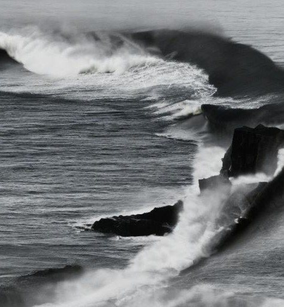

Oscar Dujarrier // 02 Vidéo DÉFILERL'eau est le milieu dans lequel la vie s'est transformée. Elle rend possible l'émergence des formes. Dans cette vidéo, l'intelligence artificielle est envisagée selon une logique similaire : une entité de données au sein de laquelle des images naissent.
En manipulant les paramètres de cette matrice numérique par un travail de méta-prompting, le processus de génération est progressivement détourné. Alors même que l'eau est demandée à l'image, elle est poussée à se décomposer de plus en plus, jusqu'à faire émerger du bruit. L'image quitte alors la représentation pour révéler sa matière première : un flux instable, où l'eau finit par se confondre avec le signal. Un travail de texte accompagne cette dérive, entre apparition et disparition.